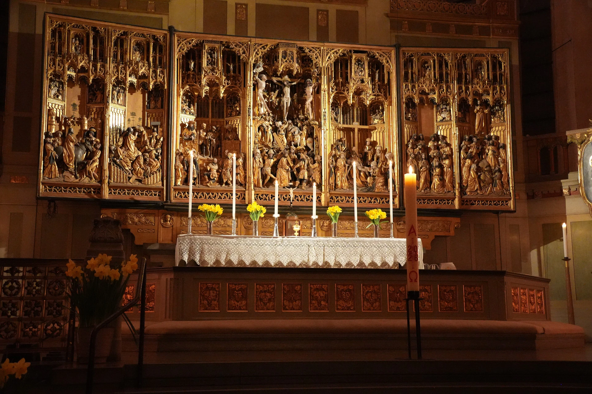
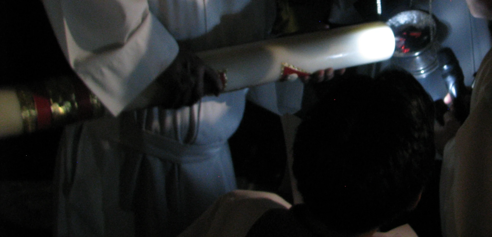
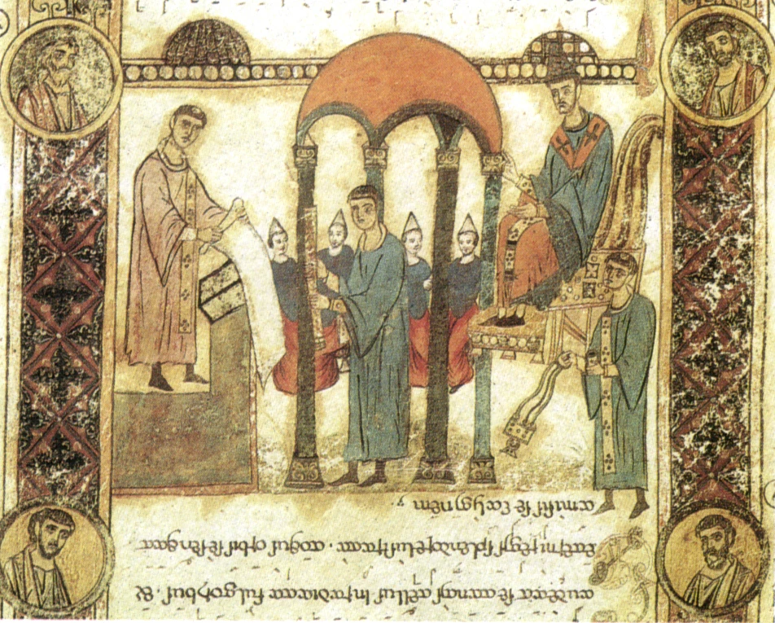
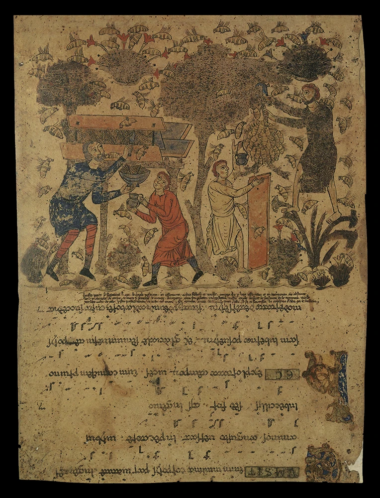
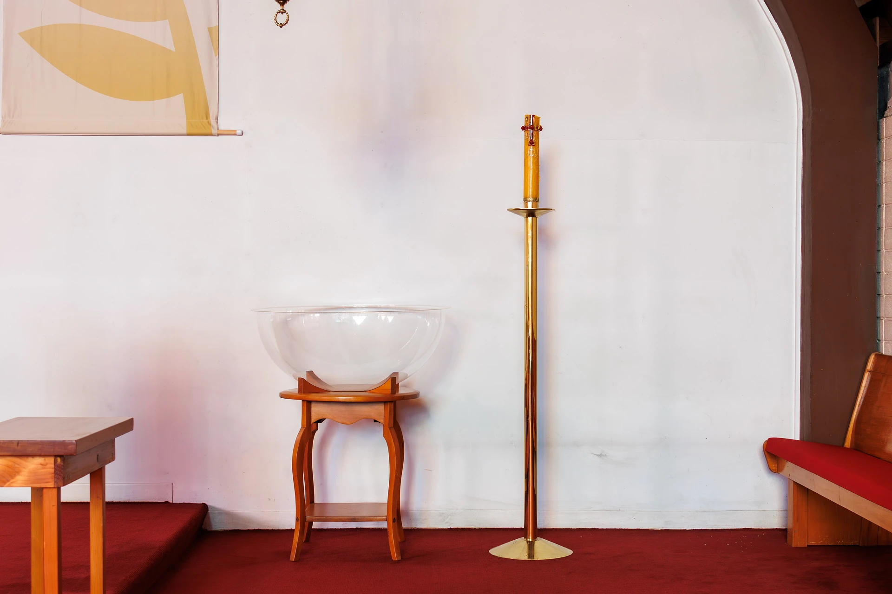

아직 펼치지 않은 카드어둠 속에 번지는 불 · 1부활초부활절 전날 밤, 캄캄한 성당에서 가장 먼저 불을 붙이는 것은 무엇일까요?부활절 전날 밤에 켜는 아주 큰 초가 있대!
부활 성야 · 부활절 전날 밤가톨릭·성공회·루터교회 등 서방 교회
부활초
부활절 전날 밤, 불 꺼진 성당 문 앞에서 새 불이 타올라요. 사제는 그 곁에서 새 초에 십자가와 처음·끝을 뜻하는 글자, 그리고 그해의 숫자를 새겨요. 미사 경본에 적힌 차례대로 여덟 획을 따라 새겨 보세요.
부활절 전날 밤, 아주 큰 초에 십자가랑 숫자를 새긴대. 우리도 같이 새겨 볼까?
검수 전 시안이에요(기준서 2판 · 초벌). 장면에는 미사 경본과 교회 문서, 옛 기록에 있는 것만 옮겼어요. 경문(예식 때 하는 말)은 라틴어를 이 안내서가 우리말로 옮겼어요. 상상은 ‘눈 감고 상상해 보기’에만 썼어요.
시안 확인용카드 단계 미리 보기
1
불 꺼진 성당, 바깥의 새 불
부활절 전날 밤, ‘부활 성야’ 예배가 시작돼요. 성야는 잠들지 않고 밤을 새우며 부활을 기다린다는 뜻이에요. 성당 안의 불은 모두 꺼져 있어요.
성당 밖에는 큰불을 피워 둬요. 교황청은 이 불꽃이 어둠을 정말로 몰아내고 밤을 밝힐 만큼 커야 한다고 적었어요. 사제가 이 ‘새 불’을 축복하면서 그 밤의 예배가 시작돼요.

부활절 전날 밤, 성당 안은 깜깜해. 밖에서는 큰불이 활활 타고 있어.
물어보기깜깜한 밤에 모닥불을 보면 어떤 소리랑 냄새가 날까?
2
새 초에 새기기
불 곁으로 새 초를 가져와요. 부활초는 진짜 밀랍으로 만들고, 해마다 새로 마련하는 하나뿐인 큰 초예요.
사제는 송곳으로 초에 십자가를 긋고, 위에 알파, 아래에 오메가, 십자가 팔 사이에 그해의 숫자 넷을 새겨요. 한 획을 그을 때마다 정해진 말을 하는데, 그 말과 차례가 미사 경본(미사 때 쓰는 예식서)에 적혀 있어요. 빨간 점에서 시작해 따라 새겨 보세요.
빨간 점에서 시작해, 흐린 선을 손가락이나 마우스로 따라 그어 보세요. 사제가 새기는 차례 그대로예요.
빨간 점에서 시작해 세로 줄부터 그어 보세요. 다 그으면 빨갛게 새겨져요.
여덟 획을 다 새겼어요. 이제 사제가 십자가 모양으로 향 알갱이 다섯 개를 박고, 새 불에서 이 초에 첫 불을 붙여요.
새김이 끝나면 사제는 십자가 모양으로 향 알갱이 다섯 개를 박아요. 예수의 다섯 상처를 떠올리게 하는 알갱이예요.
그해의 날짜를 초에 적는 일은 아주 오래되었어요. 8세기 영국의 수도자 베다는 701년 무렵 로마에서 초에, 또는 초에 붙인 양피지에 그해의 날짜를 적는 것이 관습이었다고 전해요.
신부님이 초에 십자가랑 글자랑 숫자를 새겨. 빨간 점부터 우리도 따라 새겨 보자!
물어보기너라면 초에 무슨 숫자를 새기고 싶어? 왜 그 숫자야?
3
“그리스도의 빛”
사제가 새 불에서 이 초에 첫 불을 붙이며 기도해요.
“영광 속에 부활하신 그리스도의 빛이 우리 마음과 생각의 어둠을 몰아내소서.”
부활초에 불을 붙일 때의 기도(로마 미사 경본) · 라틴어를 이 안내서가 옮김
부제(사제를 돕는 성직자)가 초를 높이 들고 성당 문 앞에서 노래해요. “그리스도의 빛.” 사람들이 답해요. “하나님께 감사.”
성당 한가운데에서 두 번째로 노래하면, 모두가 이 초에서 자기 손의 작은 초로 불을 옮겨 붙여요. 제단 앞에서 세 번째로 노래하면 성당 안의 불이 켜져요. 그때까지 행렬을 이끄는 것은 이 초의 불빛 하나뿐이에요.
큰 초에 불이 붙었어! 사람들이 큰 초에서 작은 초로 불을 받아.
물어보기깜깜하던 성당이 작은 촛불로 가득 차면 어떻게 보일까?
4
벌을 기리는 노래
부제는 이 초를 큰 촛대에 세우고, 그 곁에서 긴 노래를 불러요. 첫 낱말을 따서 ‘엑술텟’이라고 불러요. “이제 하늘의 천사들은 기뻐하라”로 시작하는 부활 찬송이에요.
이 노래에는 벌이 나와요. 노래는 이 초를 ‘벌들의 일과 사람의 손으로 만든’ 제물이라고 부르고, 이렇게 노래해요.


“이 불은 녹아내리는 밀랍으로 타오르니, 그 밀랍은 이 귀한 등불을 이루라고 어미 벌이 빚어낸 것이라.”
부활 찬송(엑술텟) · 라틴어를 이 안내서가 옮김
천 년쯤 전 남부 이탈리아에서는 이 노래를 긴 양피지 두루마리에 적어 불렀어요. 부제가 높은 독서대(앰보)에서 노래하며 다 읽은 부분을 앞으로 늘어뜨리면, 아래에 선 사람들이 그 그림을 보며 노래를 따라갔어요.
그래서 두루마리의 그림은 글과 거꾸로 그려져 있어요. 몬테카시노 수도원의 두루마리에는 꽃꿀을 모으는 벌과, 부활초에 쓸 밀랍을 거두는 사람의 그림도 있어요.
큰 초 옆에서 아주 긴 노래를 불러. 노래에 꿀벌이 나온대!
물어보기꿀벌이 만든 밀랍으로 이 초를 만들었대. 꿀벌한테 뭐라고 말해 주고 싶어?
5
처음과 끝
부활초는 부활절부터 성령 강림 대축일까지 50일 동안, 큰 예배 때마다 켜져요.
그 뒤에는 세례대(세례를 주는 물그릇) 곁으로 옮겨요. 누군가 세례를 받으면 그 사람의 작은 초에 이 초의 불을 붙여 줘요. 누군가 세상을 떠나 장례를 치를 때에는 관 곁에 이 초를 세워요.

교회는 장례 때의 이 초를, 그리스도인의 죽음이 죽음에서 생명으로 건너가는 그 사람의 ‘파스카(건너감)’라는 표시로 읽어요. 그렇게 한 해 동안, 같은 초가 누군가의 처음과 끝을 함께 비춰요.
아기가 세례를 받는 날에도, 누가 하늘나라에 간 날에도 이 큰 초를 켜.
물어보기처음 시작하는 날과 마지막 날에 같은 초를 켜는 건 왜일까?
눈 감고 상상해 보기
깜깜한 성당 문 앞, 장작이 타닥타닥 타고 연기 냄새가 번져요. 사제의 송곳이 차가운 밀랍을 긁는 작은 소리. 2, 0, 2, 6. 첫 불이 심지에 옮겨붙자, 어둠 속에 하얀 기둥 하나가 서요. 문이 열리고, 그 불빛 하나를 따라 사람들이 걸어 들어가요.
눈을 감아 봐. 깜깜한 밤, 모닥불이 타닥타닥. 큰 초에 불이 반짝 켜져. 그 불빛을 따라 다 같이 성당으로 들어가!
나의 자리
사제는 알파와 오메가 사이에 그해의 숫자를 새기며 “모든 시간이 그분의 것”이라고 말해요. 내 한 해의 숫자 곁에는 어떤 처음과 끝이 새겨져 있나요?
네가 올해 처음 해 본 일은 뭐야? 그 일을 초에 새긴다면 어디에 새길래?
마음에 닿는 한 줄을 고르거나 직접 써 보세요. 한 줄을 남기면 이 자리의 도장이 찍혀요. 이 기기에만 저장돼요.
더 깊이
궁금한 칸만 펼쳐 읽어도 괜찮아요.
기록마다 다른 점
향 알갱이 미사 경본은 숫자를 새긴 뒤 향 알갱이 다섯 개를 ‘박을 수 있다’고 적어요. 꼭 해야 하는 일은 아니어서, 성당마다 하기도 하고 하지 않기도 해요.
세 번의 노래 미사 경본은 “그리스도의 빛”을 성당 문 앞, 한가운데, 제단 앞에서 세 번 부르게 하고, 세 번째 뒤에 성당의 불을 켜게 해요. 교황청 회람은 그때까지 전등을 끄고 이 초의 불빛만으로 행렬을 이끌라고 적어요.
초의 크기 1517년 영국 솔즈베리의 예식서는 부활초의 높이를 36피트(약 11m)로 적었어요. 요즘 초는 대개 사람 키보다 작아요.
함께 읽는 말씀
말씀은 뜻만 옮기고, 본문은 대한성서공회 개역개정으로 이어 드려요.
히브리서 13장 8절 예수 그리스도는 어제나 오늘이나 영원히 같으신 분이에요.
요한계시록 22장 13절 주님이 스스로를 알파와 오메가, 처음과 마지막, 시작과 끝이라고 말씀하세요.
출애굽기 13장 21~22절 이스라엘 사람들이 밤에 광야를 걸을 때 불기둥이 앞서가며 길을 비췄어요. 엑술텟은 부활초의 빛을 이 불기둥에 견주어 노래해요.
직접 가 보기
확인한 날 · 2026년 11월 22일 · 바뀌기 쉬운 정보라 정기적으로 다시 확인해요
가톨릭 성당의 부활 성야 미사에서 볼 수 있어요. 2027년에는 부활절이 3월 28일이라, 3월 27일 밤에 열려요. 미사 시간은 성당마다 달라서 미리 확인해야 해요.
성공회와 루터교회 등도 부활 성야를 지켜요. 부활절 뒤 50일 동안은 큰 예배 때 제단 곁에 켜 둔 부활초를 볼 수 있어요.
여덟 획 새기기 금박
십자가 · 알파 · 오메가 · 2026, 여덟 획을 모두 따라 새기면 카드에 금박이 입혀져요.
십자가 · 알파 · 오메가 · 그해 숫자 넷, 여덟 획 따라 새기기
초 곁의 노래 채색
둘 가운데 하나만 해도 카드가 채색돼요.
초 곁에서 부르는 노래(엑술텟) 녹음 듣기
아이와 함께 ‘영화처럼 보기’를 끝까지 보기
근거 보기 (11)
- 바티칸: 교황 부활 성야 전례서(2022, 라틴어·영어·이탈리아어) — 초를 새길 때의 여덟 말, 향 알갱이 다섯, 불을 붙일 때의 기도, “그리스도의 빛” 세 번, 엑술텟의 벌과 밀랍
- 로마 미사 경본 3판 영어본(잉글랜드·웨일스 주교회의 전례국): 부활 성야 시작 예식 — 성당 밖의 큰불, 송곳으로 새김, 문 앞·한가운데·제단 앞, 사람들이 초를 켬, 불을 켬, 앰보 곁 촛대
- 경신성사성 회람 「파스카 축제 준비와 거행」(1988) 82·83·99항(Adoremus 게재 영어본) — 밀랍·해마다 새로·하나뿐, 어둠을 몰아낼 만한 불, 이 초의 빛만으로 행렬, 성령 강림까지·세례대·장례
- 미국 주교회의(USCCB): 로마 미사 경본과 부활 성야 — 부활초는 진짜 초여야 하고 그리스도의 빛을 드러낼 만큼 커야 함
- 가톨릭 백과사전(1911) 「Paschal Candle」(허버트 서스턴) — 베다가 전하는 로마의 관습(날짜를 초나 양피지에), 솔즈베리 36피트(1517), 다섯 알갱이와 상처
- 영국 도서관 중세 사본 블로그(2013): 몬테카시노 엑술텟 두루마리(1075~1080년 무렵) — 앰보에서 늘어뜨림, 거꾸로 그린 그림, 벌과 밀랍을 거두는 사람
- 팩시밀리 파인더: 바르베리니 엑술텟 두루마리 — 벌의 축복, 양봉 그림, 몬테카시노 1070~1080년대
- 위키백과(영어): Paschal candle · Exultet roll — 길잡이로만
- 위키미디어 공용: 앞면 사진 정보(스트렝네스 대성당, 2026년 4월 4일 23시 21분 촬영)
- 위키미디어 공용: 멕시코시티 성녀 리타 성당 부활 성야 사진 설명(새 불 · 초 준비 · 행렬, 2013년 3월 30일)
- 대한성서공회 개역개정: 히브리서 13장 · 요한계시록 22장 · 출애굽기 13장
그림·사진·소리 출처
- 사진: Atleett · CC0 · 위키미디어 공용
- 사진: Isaac1992 · CC BY-SA 3.0 · 위키미디어 공용
- 사진: Isaac1992 · CC BY-SA 3.0 · 위키미디어 공용
- 사진: Isaac1992 · CC BY-SA 3.0 · 위키미디어 공용
- 작가 모름 · 퍼블릭 도메인 · 위키미디어 공용(바티칸 도서관 소장)
- 작가 모름 · 퍼블릭 도메인 · 위키미디어 공용(바리 대성당 문서고 소장)
- 사진: Bjankuloski06 · CC BY 4.0 · 위키미디어 공용
- 사진: Atleett · CC0 · 위키미디어 공용
- 엑술텟(부활 찬송) 앞부분 · 2007년 폴란드 올타제프 성당 부활 성야 실황(폴란드어) · 녹음: Paterm · CC BY-SA 3.0 · 위키미디어 공용 · 앞 약 1분만 씀
‘처음 만나는 기독교 문화’의 깊은 카드예요. 카드 단계와 남긴 글은 이 기기에만 저장돼요.